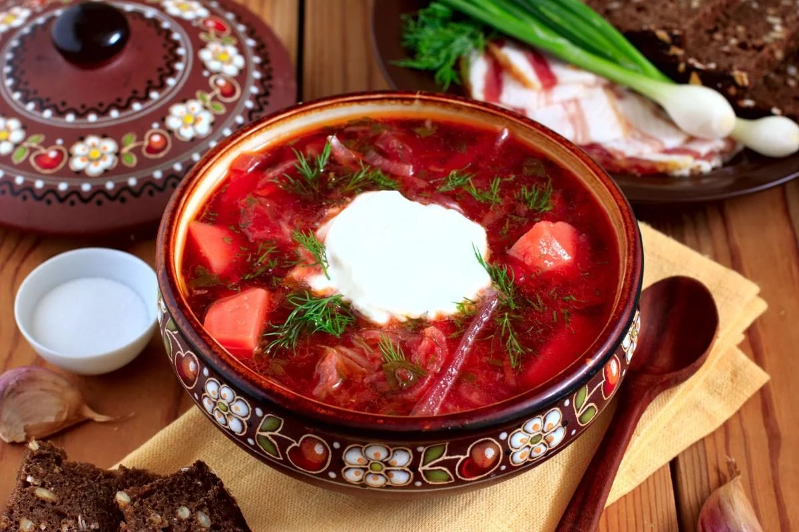

Супи
-
Борщ
Інгредієнти:
- Свинина - 500 г
- Свіжа капуста - 500 г
- Буряк - 1 шт.
- Цибуля - 2 шт.
- Морква - 1 шт.
- Картопля - 4 шт.
- Томатна паста - 2 ст. л.
- Часник - 3 зубчики
- Сіль, перець, байкал - за смаком
Приготування:
- Підготуйте інгредієнти.
- На каструлі розігрійте олію і підсмажте на ній м'ясо.
- Додайте нарізані овочі та томатну пасту і пасуйте декілька хвилин.
- Залейте водою, додайте приправи і варіть до м'якості капусти та овочів.
- Подавайте з кислою вершков та зеленню.
-
Грибний крем-суп

Інгредієнти:
- Шампіньйони - 300 г
- Цибуля - 1 шт.
- Часник - 2 зубчики
- Сливки - 200 мл
- Вода - 500 мл
- Олива - 2 ст. л.
- Сіль, перець - за смаком
Приготування:
- Нарізати шампіньйони та цибулю і підсмажити на олії.
- Додати нарізаний часник і обсмажити ще декілька хвилин.
- Залити водою та довести до кипіння.
- Помішувати декілька хвилин, доки шампіньйони стануть м'якими.
- Збити сливки до густої консистенції і додати до супу.
- Загостити суп, якщо потрібно, та за смаком додати сіль та перець.
- Подавати гарячим з крутонами або хлібом.